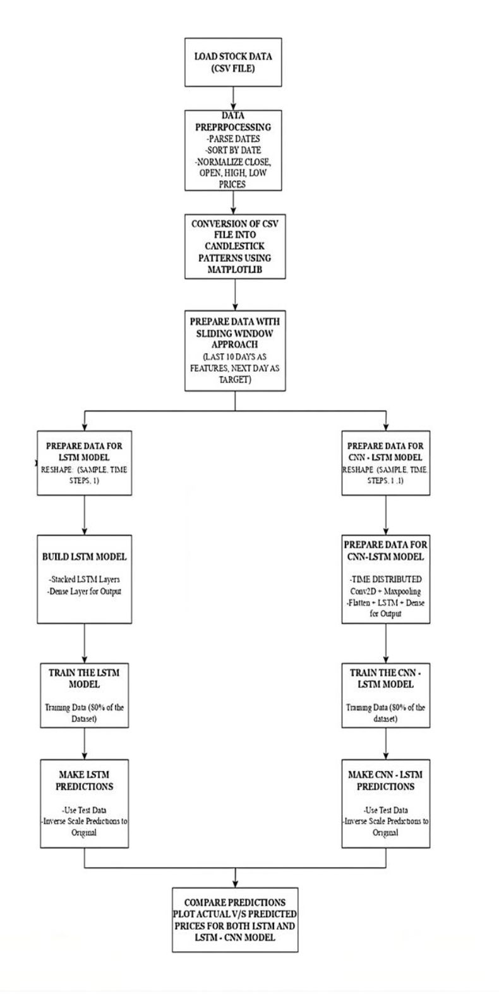

LVM - Learn With Vivek Mahendra
Learning made simple with Vivek Mahendra
Predicting stock market prices is inherently challenging due to the presence of high volatility, market sentiment, and the non-linear nature of financial data. Traditional techniques fail to model the temporal dependencies and sudden shifts caused by market news, global trends, or economic decisions. This project aims to tackle these challenges by exploring advanced deep learning techniques—LSTM (Long Short-Term Memory) and CNN-LSTM architectures—to model and predict stock closing prices more accurately. Additionally, it incorporates financial charting techniques, specifically candlestick charts, to provide intuitive visualizations of price movements. The evaluation is conducted using Mean Absolute Error
The Stock Market is a dynamic marketplace where investors buy and sell shares of publicly listed companies. It contributes effectively to the economic growth of the country. It is influenced by numerous factors like corporate performance, economic conditions, and global events. Stock prices fluctuate based on supply and demand. So, for better prediction of stocks we implemented a solution to analyze and visualize stock price trends using candlestick charts. Candlestick charts represent daily price movements and are useful in predicting market trends. The solution involves loading historical stock data, validating necessary columns such as (Date, Open, High, Low, Close) Prices. And generating candlestick images for each trading day.
This project introduces a sophisticated approach to stock price prediction based on the combination of numerical and visual data sources, better capturing both temporal and visual patterns for stock trend analysis. Primary Aims The predominant aim of this approach is to enhance the accuracy of prediction through the integration of historical price sequences with candlestick chart images, pictures graphically, frequently used in financial analysis for changes in a day's stock prices.
Price Model Taking 15 days (about 2 weeks) of closing prices as sequential data, the model predicts the day-ahead stock price. Before feeding this dataset into the price model, it was normalized already. This helped ensure that all variables were at the same scale, so it would ensure that training was efficient and not to have problems with scales that might be misleading the numerical data.
Images of Candlestick Charts: The charts are on a day-by-day basis where it highlights the four important price levels, that being opening, closing, high, and low prices. Representing this movement of prices through an image, candlestick charts display these trends such as forming any bullish or a bearish pattern that may be invisible to be deduced in raw numerical values alone. Each day's image of a candlestick is input further enriching the prediction process with visual cues.
Earlier approaches such as ARIMA, Holt-Winters, and Exponential Smoothing rely on linear assumptions and are not suitable for chaotic data like stock prices. While these models work well for stationary data, they lack predictive power in volatile environments. Traditional ML methods like Linear Regression, Random Forest, and SVM do better at capturing patterns but fail to preserve the temporal sequencing of stock prices. RNNs attempted to address this, but they suffer from memory loss over longer sequences. LSTMs were introduced to solve this, followed by more sophisticated models like GRU, attention mechanisms, and hybrid CNN-RNN architectures. Our project specifically evaluates LSTM vs CNN-LSTM in the context of financial time-series.

The approach integrates deep learning with visual analytics. Initially, raw stock data is cleaned and used to generate monthly candlestick charts, aiding in trend interpretation. Then, we develop two models: (1) An LSTM model, trained on 10-day rolling windows of closing prices. (2) A CNN-LSTM model where CNN filters act as pre-processors, identifying short-term patterns before feeding into LSTM layers. This dual strategy enables us to evaluate whether spatial filtering by CNNs enhances the forecasting ability of LSTM networks. Both models are assessed on unseen test data using error metrics and visual comparison.
This research uniquely combines stock price prediction with visual interpretability through candlestick charts. Most studies rely solely on predictive metrics, but here we emphasize user-friendly financial visualization to support investment decisions. The introduction of a CNN-LSTM hybrid is another standout feature. CNNs are adept at detecting short-range relationships and denoising, while LSTMs maintain long-term dependencies. By merging them, the model benefits from both pattern detection and sequence learning. Furthermore, the modular design of the system enables future additions such as sentiment analysis, macroeconomic indicators, or social media data for more holistic forecasting.
The data pipeline begins by loading the CSV dataset and converting date formats. OHLC data is grouped monthly to construct candlestick charts using matplotlib’s financial plotting tools. The deep learning phase begins with normalization of 'Close' prices via MinMaxScaler. The data is converted into input sequences of 10 days (X) to predict the 11th day (Y). For the LSTM model, two stacked LSTM layers are followed by a dense prediction layer. The CNN-LSTM model reshapes the data into a 4D tensor, applies convolutional layers through TimeDistributed, and feeds the extracted features to LSTM layers. Both models are trained with early stopping to avoid overfitting.
The data preprocessing begins by handling missing values and removing outliers from the raw stock data to ensure clean input for further processing. After data cleansing, the OHLC (Open, High, Low, Close) prices for each day are collected, and the data is normalized using the MinMaxScaler. This normalization ensures that the input data is scaled between 0 and 1, which is crucial for deep learning models to converge quickly. The next step is to convert the numerical data (OHLC) into candlestick patterns, which are a well-established method in financial markets for visualizing price movements. This conversion involves creating individual candlestick charts for each day's data, where each candlestick represents the open, close, high, and low prices. The candlestick images are generated using matplotlib’s mpl_finance library, and the chart is color-coded: green for bullish days (where the closing price is higher than the opening price) and red for bearish days (where the closing price is lower than the opening price). These generated candlestick images serve as the primary visual input for the CNN-LSTM model, allowing the network to learn both the temporal and spatial features present in the market data.


The LSTM network is specifically designed to handle sequential data and is especially good at taking advantage of the temporal dependencies in its input, thus being very well-suited for handling numeric time series, such as historical stock prices. Each layer of the LSTM takes in input sequences step-by-step, exploiting its cell structure with input, forget, and output gates that remember the relevant data from previous time steps and forget the rest. This allows the LSTM to detect patterns like trends, momentum, or reversals, which are often formed over time in financial data. For instance, it can detect a sustained upward movement that would indicate a bullish trend or detect declining highs and lows that may signal a reversal. Utilizing these temporal dependencies, an LSTM network can make appropriate predictions regarding future stock price movements, which often arise because of earlier-established patterns and trends.
The CNN-LSTM network combines the strengths of Convolutional Neural Networks (CNNs) for spatial feature extraction and Long Short-Term Memory (LSTM) networks for sequential analysis, making it ideal for processing candlestick chart images. The CNN layers first analyze the candlestick charts to detect spatial patterns, such as the shapes, edges, and positions of candlesticks, which represent specific stock price movements like trends, reversals, or consolidations. These extracted features are then passed through the LSTM layers, which process the sequence of image-derived features to capture temporal correlations across consecutive daily patterns. This hybrid approach enables the model to understand both the visual representation of stock price patterns and the temporal dependencies between them, providing a comprehensive framework for stock market prediction.
The implementation involves three major code blocks. First, the candlestick chart generation module reads and processes OHLC data from the CSV file. The script uses pandas for data manipulation and matplotlib for visualizing daily candlestick patterns. Each day’s chart is color-coded—green for bullish days and red for bearish days—saved in a dedicated folder as image files. These charts provide visual insight into market behavior and can be embedded in future dashboards.
The second module handles LSTM-based forecasting. Here, the 'Close' prices are normalized using MinMaxScaler to speed up convergence. A sliding window approach is applied where the last 10 days' prices are used to predict the next day's closing price. The model architecture consists of two LSTM layers with 50 units each followed by a dense output layer. The model is trained for 20 epochs using the Adam optimizer and mean squared error as the loss function. Once trained, predictions are made and plotted alongside actual prices.
Finally, the CNN-LSTM model combines temporal and spatial processing. Input sequences are reshaped into 4D tensors and passed through TimeDistributed Conv2D and MaxPooling2D layers to extract temporal features. These are flattened and passed through an LSTM layer and finally a dense output layer. The CNN filters help denoise and highlight short-term fluctuations while the LSTM captures broader temporal dependencies. After training, predictions are compared visually and evaluated using metrics like MAPE and MAE. The difference between LSTM and CNN-LSTM predictions is also computed and visualized to assess performance gains.
This research illustrates the powerful synergy between visual tools and advanced machine learning for stock prediction. Through LSTM and CNN-LSTM networks, we've demonstrated how neural networks can effectively learn from past price trends to predict future values. While LSTM provides a strong foundation, the addition of CNN enhances learning by capturing granular features. Visual candlestick charts supplement numerical predictions with intuitive insights, making the system valuable not just for data scientists but also for traders and investors. With continuous improvements, such hybrid systems could revolutionize algorithmic trading platforms and decision-making tools in finance.
This research work titled "Stock Market Prediction Using Neural Networks by Combining CNN and LSTM Models" has been officially published at the International Conference on Innovative Computing and Communication (ICICC 2025). The paper showcases our novel hybrid deep learning approach and visual analytics for stock forecasting.
You can access the full paper at:
https://papers.ssrn.com/sol3/papers.cfm?abstract_id=5190443